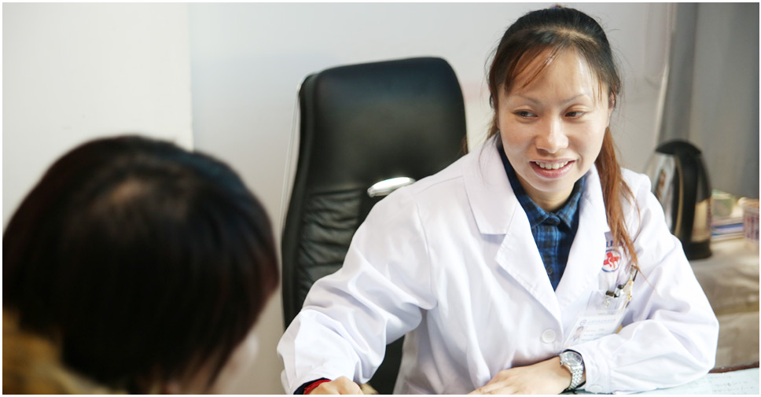

上海江城皮肤病医院是按国家三级医院设置的大型皮肤病专科医院。医院面积10000余平方米，开设病床104张。设有皮肤内科、皮肤外科、中医科、中西医结合科、银屑病门诊、白癜风门诊、性病科、激光美容科、医学美容科、康复理疗科、预防保健科等专业化特色诊疗科室及皮肤病理实验室、性病实验室等多个精微化科研实验室。是集临床、科研、教学、预防为一体的国际化、现代化皮肤病专业医院。
我院临床技术：黑色素细胞移植术被列为国家重点推广项目。
我院"DFMZ308牛皮癣中医活化疗法"获奖
我院皮肤病成果展在位于东风明珠塔的国际新闻中心启动。
我院获批成为国家三级皮肤病专科医院。
-
顾昌林 主任医师 教授
上海江城皮肤病医院主任及学术带头人，国家特殊津贴获得者...[详情]
我要咨询 -
吴玉琴 主治医师
中华医学会皮肤病专业委员会会员，上海市中西医结合学会会员...[详情]
我要咨询 -
胡鸿泰 副主任医师
上海江城皮肤病医院整形外科、美容外科主任，特聘专家，副主任医师...[详情]
我要咨询 -
夏风 主治医师
上海江城皮肤病医院皮肤病专家科研团队主要成员，主任，中华医学会...[详情]
我要咨询 -
杨林 主治医师
上海江城皮肤病医院主任，顾昌林皮肤病诊疗科研团队主要成员...[详情]
我要咨询 -
郭晔 副主任医师
上海江城皮肤病医院专家组成员，皮肤外科主任，主治医师...[详情]
我要咨询 -
孙卫华 美容顾问
上海仁济医疗集团-江城医院皮肤科美肤主任，曾就职于上海著名三甲医院...[详情]
我要咨询 -
李衡华 执业医师
上海江城皮肤病医院毛发移植中心主任，韩式新一代FUE/FUT毛发移植...[详情]
我要咨询
- 皮肤外科
- 皮肤美容科
- 白癜风
- 牛皮癣
- 皮肤美容
- 痤疮
- 湿疹
- 荨麻疹
- 鱼鳞病
- 脱发
- 其他
.jpg)
-
贵州白癜风患者陈先生
2012年5月23日，车传华主任来到住院部病房，看望远道而来的白癜风患者陈先生。48岁的陈先生患白癜风已有20年，一周前他专程从家乡贵州来...[详情]
.jpg)
-
上海宝山白癜风患者李先生
我是从上海宝山那边过来，家是安徽亳州的。"2012年3月17日，在上海江城皮肤病医院专家的诊室，一个白癜风小伙子来院复诊，...[详情]
.jpg)
-
安徽患者阿桃在上海江城
医德高尚，妙手回春"这八个字经常被患者写在锦旗上感谢医生，虽然感谢的话都差不多，但是背后患者的求医治病经历却不尽相同...[详情]
.jpg)
-
加拿大牛皮癣患者齐考凌
2012年1月20日，春节临近，时值大寒。在上海江城皮肤病医院顾昌林教授的专家诊室里，却是一派喜气洋洋，暖意如春。一位戴着眼镜...[详情]
.jpg)
-
江苏患者在上海江城皮肤病医院
2012年5月21日 上午，在上海江城皮肤病医院专家顾昌林教授的诊室，一位前来复诊的银屑病（俗称牛皮癣）患者疗效显著，他怀着感激之情...[详情]
.jpg)
-
患者慕名投医，敬送顾教授锦旗
【患者概况】阿当（化名），27岁，湖北籍，病史1年。【初诊时间】2012年6月18日【就诊医院】上海江城皮肤病医院（隶属上海仁济医疗集团...[详情]
-
中药导膜：其根据中医药学原理
今年8月，小胡来到上海江城皮肤病医院诊治，皮肤美容专家为她采取了一项新技术--中药导膜：其根据中医药学原理，采用清热解毒、祛风除湿...[详情]
-
调Q十分钟扫清三十个雀斑
徐小姐来自上海青浦区，今年23岁，自长大成人、走上工作岗位以来，爱美的她惟有一件挥之不去的"心病"--雀斑。那姣美的脸...[详情]
-
无针美塑立竿见影 祛斑年轻十岁
邵小姐来自江苏，年青有为，但让她不爽的是近年来由于工作压力大、休息不足，内分泌出现了紊乱，致使脸、鼻、额等部位出现了不少黄褐斑...[详情]
-
与痤疮搏杀，六年终获胜利
小马今年不到三十岁，大学毕业后在上海一家餐厅从事管理工作。小伙子年青有为，积极上进，颇受单位领导常识，但惟有一点让他对自己的未来缺乏...[详情]
-
中医内外调理 白领痤疮两周见效
小韩今年刚二十多岁，从温州来上海打工，其间认识了一位女孩，在两人相处过程中，各方面都很投缘，惟有一点让女孩不满意，就是小韩脸上长满了...[详情]
-
中西医治痤疮帅哥告别青春痘
翁先生系外沪上一家公司白领，由于是青春期，加之工作压力大，脸上发了痤疮。为此，翁先生曾在上海一些医院治疗，三年下来不但效果不佳，还由...[详情]
-
一周治好湿疹一身轻松
我觉得刘主任医术非常高明，能够一个星期下来，我的手就明显的有所改变。再一个，本来的话，我星期五要过来，但是星期五因为是六一儿童节，走...[详情]
-
七天治好湿疹病，老人好似
李先生是个退休老工人，今年夏天得了湿疹，一点点扩大，直到漫延到全身。这种病犯起来又痛又痒，非常难受，折磨得老人死的心都有。为了治...[详情]
-
六年不愈的湿疹病皮肤科专家
费先生是上海一家私营企业的老板，事业发达，家庭幸福，惟有一件事让他不开心，他走了上海几家大医院，那就是他得了一种六年不愈的湿疹病...[详情]
-
希望伊拉克国内有江城皮肤病医院
有个很重要很重要的事情，就是第一天来治疗的时候，早上治疗，下午他就感觉到比以前病情要好很多很多，很大很大，他很高兴，他说他肯定在这个...[详情]
-
多年荨麻疹江城皮肤科几天解决
陈老师退休前上海崇明人，今年六十二岁，几年前患了慢性荨麻疹，主要是四肢和脸部红肿，几年以来反复纠缠，持续数年，此病困扰了他和家人...[详情]
-
治疗荨麻疹求医无门江城医院除疾
张先生是江西余干人，现年38岁，多年前到浙江省慈溪市工作生活，2007年不幸患上荨麻疹，三年多来到处求医，采用过各种方法，不但始终未愈...[详情]
-
鱼鳞病患者的喜讯
来自四川省的鱼鳞病患者小李，今年刚20岁，2010年12月初专程来到上海江城皮肤病医院治疗。小李治疗14天，严重的病情已经得到了有效控制，和正...[详情]
-
鱼鳞病治好真开心
原来这里全都是鱼鳞，干燥，好难受，现在滑点儿了。2010年12月24日，在上海江城皮肤病医院杨林主任的诊室，13岁的小董治好了鱼鳞病，他撩起...[详情]
-
全身长"蛇皮"杨主任施妙招
小林今年17岁，来自浙江海盐，两年前得了鱼鳞病，在当地治疗无效后，通过网络了解到上海江城皮肤病医院治...[详情]
FUE毛囊单位提取机
仪器简介： 利用最先进的步进操作端，准确快速的对单个毛囊单位进行游离提取。将手术时间缩短3-5倍，不受患者头发细软，头发卷等条件限制，毛囊切割完整，零损伤，最大限度利用毛囊，无需多次植发。
适用疾病： 适合头发、胡须、胸毛、美人尖、鬓角、睫毛、眉毛、腋毛、腿毛、阴毛以及疤痕等毛发移植和修复手术 (了解详细)
美国308nm准分子激光治疗仪
仪器简介： 该技术在欧美被称为"白癜风、银屑病的终结者","308nm准分子激光"对正常皮肤没有损伤，效果显著，只需照射几秒即可完成；简便快捷，不影响正常生活和学习。
适用疾病： 白癜风、银屑病、过敏性皮炎、斑秃、湿疹、痒疹等皮肤病。 (了解详细)
BY-ⅡCM型表皮移植白癜风治疗仪
仪器简介： BY-ⅡCM型表皮移植白癜风治疗仪通过负压、温度对皮肤的双重物理效应，将表皮自基底层分离起疱，然后将表皮移植到已去除表皮的白癜风部位。
适用疾病： 白癜风及有色斑的覆盖 (了解详细)

Derma 670生发仪
仪器简介： 具有活发、育发、健发功效，填补国内同领域的空白。历经7年的临床观察显示：逾95%成功停止脱发 、80%-86%生新发，若搭配其它疗法可高达92%的疗效，迄今未发现不良反应。
治疗机理： 激活毛囊、调节油脂分秘、加速头皮的血液循环、促进头皮健康，改善发质。 (了解详细)

德国BICOM2000型过敏原检测仪
仪器简介： 德国百康利用生物共振技术，检测某种（些）物质是否引起体内特异性的频率变化，确定过敏物质即过敏原。
适用疾病： 湿疹、荨麻疹、接触性皮炎、神经性皮炎、真菌变态反应性皮炎等过敏性皮肤病 (了解详细)
德国MeDioStar"黄金波长"激光脱毛机
仪器简介： 是德国Asclepion公司第四代优秀设备，采用脱毛"黄金波长"--810nm半导体激光，依据光选择性热解作用原理，可脱除各种肤色、任何部位毛发。
适应人群：
1、因遗传或者种族导致的多毛症。
2、因自身内分泌系统紊乱所导致的多毛症。（一般是雄激素分泌过多者
3、任何肤色的多毛人群都可以进行脱毛。
(了解详细)
韩国JANUS-Ⅱ多媒体人脸检测系统
仪器简介： 通过使用特殊的1000万像素单反相机镜头，对人脸皮肤进行自然光、偏振光和紫外线光照射，可以在显示屏上清楚的看到标准白光图像、偏振光图像、紫外线光图像等
适用症状： 检测痤疮、肤色和各种斑痣、表皮层色斑和真皮层色素沉淀情况、测定皮脂、卟啉，便于治疗前后对比分析等 (了解详细)
微晶磨皮治疗仪
仪器简介： 微晶磨皮是利用上皮组织再生原理，真空密闭的机内系统引导，使天然精炼的矿物质沙粒样晶体（简称微晶体）通过特殊设计的喷头，喷向皮肤表面，达到磨削皮肤的作用。
适用症状： 青春痘、粉刺、面部皮肤粗糙、毛孔粗大等。 (了解详细)
微晶磨皮治疗仪
仪器简介： 皮肤病可调节式中药薰蒸机，采用微电脑控制的中医理疗仪器。最大的优点，直接蒸煮中药，免去了需要先将中药煎煮成液体繁复过程。专门用于皮肤病药浴，效果明显。
适用疾病： 银屑病（牛皮癣）、慢性湿疹、异位性皮炎、荨麻疹、带状疱疹、玫瑰糠疹、严重脂溢性皮炎。 (了解详细)
德国蓝氧自体净血治疗仪
仪器简介： 将经特殊处理的蓝氧（O3）导入血液，可增加血氧含量，改善细胞新陈代谢，增强细胞活性，加快脏腑功能恢复，促进受损皮肤细胞修复。
适用疾病： 银屑病、白癜风、花斑癣、皮炎、湿疹、荨麻疹、鱼鳞病、带状疱疹、免疫系统疾病及亚健康人群。 (了解详细)
-
广西穿三甲宝宝
由于小邵一在我院治疗的情况通过网络传播，在社会是引起了很大的关注，作为上海电视台一档备受关注的民生节目"帮女郎，帮你忙"节目组也参与到其中来 一个"帮"字串起浓浓关爱。
进入专题 -
走进社区
九月是丰收的季节，也是皮肤病高发季，中医节气看，中秋是气候转换的分界点。中秋之前算早秋，一过中秋，天气明显转凉，早晚温差大，人体新陈代谢渐缓，尤其老人、小孩，抵抗力弱。
进入专题 -

福建熊猫女婴
三明一女婴染怪病半身长满黑斑 爱笑天使蒙阴影，在妈妈眼里，她是一个刚降临人世不久，可爱又淘气的小天使，有着一双水汪汪的大眼睛，爱笑爱闹，正迫不及待地开始认识这个美好的世界。
进入专题 -
百年难遇暴雨，水淹余姚
10月16日，上海江城皮肤病医院医疗团队，带着大量医疗设备还有药物长途驱车从上海市杨浦区黄兴路286号赶往余姚市。在当地志愿者的帮助下搭起了两个遮阳雨棚，作为临时医疗咨询救助点。
进入专题
-

世界银屑病日
据不完全估计，全世界约有1.25亿人受到银屑病的困扰，2013年10月29日，第八个"世界银屑病日"，一场由皮肤病专家、患者和社会志愿者自发组织，以"拒绝歧视，我们在行动"为主题的公益倡导活动在我院举行。
进入专题 -
东风明珠成果展
为为展示我院给皮肤病患者带来的康复效果、减轻生活困难的皮肤病患者的经济负担及心理负担，12月17日，我院"中西医治疗皮肤病成果展"及"向困难皮肤病患者提供专业医疗服务和援助基金"活动在位于东方明珠塔的国际新闻中心启动。
进入专题 -
7月龄宝宝17年后来谢恩
2014年7月13日下午，有这么一家三口，爸爸、妈妈和儿子，从宁波专程来到上海，刚下火车就又风尘仆仆地赶往上海江城皮肤病医院，抬匾进院，满面喜色。只见这块匾上书四个大字：厚德载物。
进入专题 -
我院公开课
集皮肤科、皮肤外科、皮肤美容为一体的专业疾病知识讲课和知名专家来我院进行学术交流为一体，旨在提供最专业的皮肤科知识和最权威的技术。
进入专题
-

例行查房
顾昌林教授和杨林主任再病房里就患者治疗情况，进行探讨和分析。
-

望闻问切
顾昌林教授，在接诊时替患者把脉，详细询问患者的发病时间和治疗经过，充分了解患者的发病史和治疗史。
-

随时随地询问患者治疗情况
顾教授和杨林主任在走廊偶遇患者，与患者交流，询问治疗康复情况。
-

精益求精，尺量五官比例
植发科李衡华主任在接诊的时候，对患者的五官比例进行测量，力求给出最佳的植发方案。
-
仔细耐心，看诊血管瘤患者
由于血管瘤患者一般年龄较小，李正森教授和郭晔主任更加详细的对患者进行检查和问诊。
-

亲切交谈问病情、愉悦互动定疗法
很多患者与林柳益医生相处都有一种如沐春风的感觉，在轻松的交谈中她不知不觉却又准确的了解到了患者的病因、病况，最后制定出让人满意的治疗方案。
-
放大镜下看毛孔，检查更仔细
美容科主任吴玉琴，在替患者诊断脸部疾病的时候都要用放大镜进行仔细的检查，确保找出准确的病因
-

亲切愉快的医患交流
脱发科叶成华主任与患者亲切的交流，在轻松愉快的气氛中询问和诊断患者的病情，给出最佳的的治疗方案。
-

细心检查不容错、患者病痛必为先
脱发科叶成华主任与患者亲切的交流，在轻松愉快的气氛中询问和诊断患者的病情，给出最佳的的治疗方案。
-
护士站
她们都拥有娴熟的护理技能，对每位患者都如同家人，工作热情、细致、负责……无不是患者放心的保障。